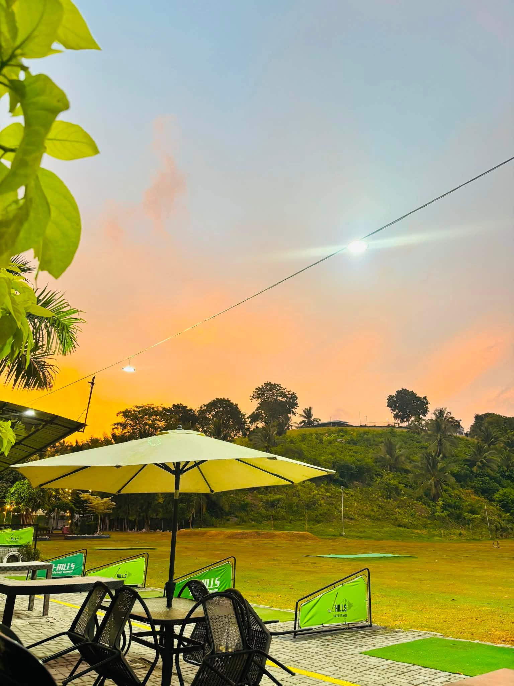

Things To Do in GenSan
Best Time to Visit
Late Afternoon or Evening
Experience
Golf & Dining
Location
Nopol Hills, Brgy. Mabuhay
J-Hills Golf Range and Restaurant
Practice your swing, enjoy a meal and refreshing drinks, and relax with open-air views in Nopol Hills.
Golf & Dining
Good swings, great food, and a relaxing view
J-Hills Golf Range and Restaurant brings golf practice, food, drinks, and open-air relaxation together in Nopol Hills. Visitors can spend time at the covered driving-range bays, enjoy a meal beside the range, and take in the green hillside setting.
The venue suits casual practice sessions, family meals, barkada meetups, and laid-back evening visits. Its official Facebook page also promotes alfresco spaces, online booking, and private-event inquiries.
Before going, contact J-Hills directly to confirm current opening hours, range fees, bay availability, equipment requirements, menu availability, and booking arrangements.
Suggested Visit
Plan a relaxed golf-and-dining stop
- CONFIRM DETAILSCheck current hours, range fees, bay availability, and booking arrangements.
- ARRIVECome before sunset if you want daylight views and a cooler transition into the evening.
- CHECK INAsk the staff about the range setup, equipment requirements, and available practice bays.
- PRACTICESpend time working on your swing from one of the covered hitting bays.
- TAKE A BREAKRelax at the outdoor tables and enjoy the open range and hillside view.
- DINEOrder food and refreshing drinks from the restaurant during your visit.
- PHOTO STOPCapture the J-Hills hillside sign, range views, and evening lights.
- PLAN AHEADAsk directly about online booking, group visits, or private-event arrangements.
J-Hills visitor information
Best For
Golf, meals, and easy meetups
- Casual golf practice
- Afternoon and evening visits
- Family meals and barkada meetups
- Alfresco dining
- Refreshing drinks
- Group and private-event inquiries
- Range and hillside photos
Quick Info
Visit details
- Location
- Nopol Hills, Brgy. Mabuhay, General Santos City, Philippines, 9500
- Hours
- Please confirm current opening hours directly before visiting.
- Services
- Driving range, restaurant dining, alfresco seating, online booking, and private-event inquiries
- Tip
- Confirm range fees, bay availability, equipment requirements, menu availability, and bookings before your trip.

Practice your swing, share a meal, and enjoy the open-air view at J-Hills.

Need a Ride?
Call a trusted local taxi to take you to J-Hills Golf Range and Restaurant.
- Reliable
- Safe
- Comfortable
- Advance Booking Available
J-Hills Golf Range and Restaurant
Gensan City Taxi
Reliable airport and city taxi service in General Santos City, Philippines. Safe, on time, comfortable, and available for advance booking. Message us to reserve your ride today.
0935 025 5176Photo Stops
More J-Hills moments
0 People Reacted
Was this guide helpful?
Explore More